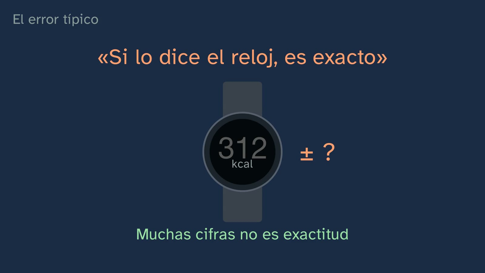

The apps that measure you
In a nutshell
The class answers the question the previous one ended with: your watch, your fitness band or your phone: how far can you trust what they tell you? And who else do they tell? Students examine the watch the way they examined the tests in class 3: what it measures, how it measures it and whether it measures well, comparing it with the reference measurement. And they take away a question for any function of today's watches, however many modes they have: for each number, either it measures it with a sensor (it tracks something in your body), it recognises it in your movement (it looks for a shape, and the mode tells it which one) or it calculates it (with a formula or a program made by measuring other people). The further from the sensor, the wider the margin, as a rule.
The hook is something many have seen without knowing what it is: the green light that flickers on the underside of a sports watch. It is looking at your pulse: the watch does the same as the fingers in class 2, but with light.
It measures, with a sensor: your pulse. A cross-section of the wrist, driven by the real pulse of a 21-year-old woman (PPG-DaLiA): with each beat, the vessels in the skin fill up a little more, the blood swallows more light and less of it comes back to the sensor; the watch counts how many times the light dips (photoplethysmography, "the explanation scientists accept", because the exact origin of the signal is still debated: Allen, 2007). Why green, with two reasons: blood looks red because it sends back red and swallows green, so green is the colour that changes with each beat (oxygenated blood absorbs more than a hundred times more at 530 nm than at 660 nm: 139 times with the data of Bosschaart et al., 2014; 125 with Prahl's); and green doesn't go deep: it stays in the thin vessels near the surface and gives a cleaner signal, with the sensor right beside them (Charlton et al., 2022).
Is it right? It is checked with the reference measurement alongside: the electrocardiogram (or a validated chest strap). With real data: sitting down, each heartbeat in the chest has its dip of light at the wrist, and the two rhythms almost match (86 and 87 per minute, counting beats and dips). In general, the meta-analysis by Zhang et al. (2020; 44 studies, 15 brands) gives a mean bias at rest of −0.01 beats per minute. And what nobody tells you: right on average does not mean right for you. In the meta-analysis by Chevance et al. (2022; Fitbit watches), 95% of individual measurements fell between 24 beats below and 18 above the electrocardiogram: the errors cancel out in the average, but you could be any of those dots.
When you move. The same young woman on the stairs of a building: her heart is at 177 beats per minute, and the light at her wrist and the movement of her wrist, at 117. The light no longer follows the heart, but the movement (arm swing and footsteps put a sway into the light that is stronger than the heartbeat: Zhang, Pi and Liu, 2015). That is why the watch has an accelerometer, which senses the movement and subtracts it. Even so, it depends on what you are doing: on average, against the electrocardiogram, −0.5 beats per minute on the treadmill, −4.6 on a bike and −7.3 with weights (Zhang et al., 2020). More sensors: red and infrared light for blood oxygen (here red does work, because blood with and without oxygen swallows red differently: at 660 nm, 0.15 versus 1.64 mm⁻¹, Bosschaart et al., 2014; Jubran, 2015); two electrodes, one on the back and one on the crown, for a single-lead electrocardiogram; a barometer, for altitude (one floor, 3 m, for Garmin); and GPS. Apple's blood oxygen measurement is designed for ages 18 and over, and Apple's and Samsung's electrocardiogram for ages 22 and over: students should know this.
It recognises, in your movement: your steps. The accelerometer from the inside (a part smaller than a millimetre, hung on springs, which lags behind through inertia) and a step counter with its threshold, on the real signal of a wrist that is walking: it counts 75 of its 76 peaks. With gentler impacts (simulation), the peaks don't reach the line and it counts too few: walking very slowly on a treadmill, wrist-worn devices were off by 41% of the counted steps on average, against 15% at a normal pace (CADENCE-Adults, 258 adults, 2022; with all the devices, including those worn on the waist, thigh and ankle, 40% and 7%). Moving your wrist without walking makes it count too many, and pushing a trolley, too few. In the reviews, they almost always fall short. The modes, according to the brands' manuals: when you choose one, you tell the watch which movement to recognise and which sensors to use (Apple: "Depending on your workout, it selects the most appropriate inputs"). On the treadmill, without GPS, steps and distance come from the swing of the arm and from the stride it learned on your runs with GPS; holding on to the handrail, it is less accurate (Garmin). With weights, some watches count a rep each time the arm wearing the watch returns to the start, and may not count leg exercises (Garmin); on how accurate they are, there are only small studies so far; other watches don't count reps on their own and record time and pulse. In the pool, a length for each turn at the wall, using the pool length you give it, and a stroke for each cycle of the arm wearing the watch; with 78 swimmers and two watches, the error in lengths ranged from almost 0 to 20%, depending on the watch and the speed (Lee et al., 2018). On the exercise bike, the wrist hardly moves: it records time and pulse, and with a bike sensor, or with the bike connected, speed, cadence and power (Apple, Garmin).
It calculates: your calories. The watch doesn't measure them: it has no calorie sensor. The reference measurement is indirect calorimetry, the mask from class 3: the oxygen you use (about five kilocalories per litre; from 4.7 to 5.05 depending on what you burn, with Weir's formula). The watch calculates them with a formula made by measuring other people (pulse, movement, the mode, age, weight, height and sex), like 220 − age. In the review by Germini et al. (2022; 65 studies), the mean error for calories was over 30% for every brand. And it depends on what you do: running, on average, it gets closer than on a bike (O'Driscoll et al., 2020) or with weights (no device was valid on a bike or with weights: Boudreaux et al., 2018); with weights, depending on the device, from 15% to more than 50%, too high or too low (Mitchell et al., 2024), because the effort comes in bursts and the pulse predicts energy use well in a continuous effort (Reis et al., 2019). And as with the pulse, with a wider margin: in half an hour of exercise, individual measurements ranged from about 380 kcal too low to more than 200 too high (Chevance et al., 2022; the channel's calculation). More calculations: maximal oxygen uptake (the watch's "VO₂max") comes from comparing the pulse with the speed; on average it is almost right, but for one person it can be off by up to about 10 ml/kg/min, up or down (Molina-Garcia et al., 2022). Recovery or stress scores: in a study of ten brands, none published its exact formula (Doherty et al., 2025). Sleep: in the lab, the stages are read from brain waves (light sleep, small and fast; deep sleep, slow and large), the eyes and the muscles (polysomnography); the watch doesn't see the brain: from movement and, in many watches, the pulse, a program trained on lab nights calculates the stage (Apple, with the accelerometer: "Estimating Sleep Stages from Apple Watch", 2023). With a real night (Walch et al., 2019: an Apple Watch in a sleep lab) and real brain waves from another person (Sleep-EDF). Measured: total sleep time is off by about 17 minutes on average (Lee et al., 2025: 24 studies); when you are awake and lying still in bed, it marks 2 to 5 minutes in every 10 as awake (Schyvens et al., 2025; Chinoy et al., 2021); for the stages, out of every ten minutes of sleep, in about five it gives the same stage as the lab (Miller et al., 2022).
The typical mistake, "if the watch says so, it's exact", taken apart: a screen with all its digits doesn't show its margin. The traffic light sums it up by family, with everything from the class in its place: what a sensor measures, green (pulse, blood oxygen, the electrocardiogram, altitude, GPS; the pulse, when you are still, almost exact on average, and further off when you move); what it recognises, amber (steps, reps, lengths; steps, 15% at a normal pace); what it calculates, red (calories, VO₂max, scores, sleep stages; calories, over 30%), with exceptions, such as how long you sleep. And the question, on its own: does it measure it, recognise it or calculate it? And of 310 models from 20 brands, only 34 appear as tested in some study, for something (Doherty et al., 2024): one in nine.
Your data. Strava's 2017 map, which in January 2018 revealed military bases in desert areas without anyone's name (our own diagram, not the company's map); and Polar, in July 2018, where routes that started and ended at the same place gave away where military personnel and intelligence agents lived. What the watch stores about your body, day after day, is health data for the European data protection authorities (Article 29 Working Party, 2015), and so is what the app concludes from it about your health, even if it is false; the EU regulation (the GDPR) prohibits processing it except in certain cases, the first being your explicit consent (art. 9), and in Spain you give that permission yourself from the age of 14 (Spain's Organic Law 3/2018, art. 7.1). Five questions before installing an app, three simple settings that protect you, and the idea that a number is not your health.
Objective. By the end, students will know where each number on their watch or sports app comes from (whether it measures it with a sensor, like the pulse; whether it recognises it in their movement according to the mode, like steps, reps or lengths; or whether it calculates it, like calories or sleep), how far they can trust each one and how that is known, and what is done with their health data and how to protect it.
For readers outside Spain: the Bachillerato is the last two years of secondary school (ages 16–18); it follows ESO, the four years of compulsory secondary education (ages 12–16). Physical Education is a core subject, taken by every student in the first year of Bachillerato. The BOE is Spain's Official State Gazette, where every law and decree is published. The GDPR (RGPD in Spanish) is the EU's General Data Protection Regulation; Organic Law 3/2018 (LOPDGDD) is Spain's data protection law, and the age of 14 for giving consent yourself is set by that Spanish law; the AEPD is the Spanish Data Protection Agency, and INCIBE is Spain's National Cybersecurity Institute. The video is in Spanish, with English subtitles; the images on this sheet come from the video and keep their Spanish text: the three families are «lo mide», «lo reconoce» and «lo calcula» (it measures, it recognises, it calculates), and the watch's maximal oxygen uptake appears as «VO₂ máx». In Spain the decimal separator is a comma: the board writes 9,8 for 9.8; this sheet uses a point. Spanish documents (the decree, the Spanish laws, the AEPD) are quoted in our translation; English sources, and EU regulations in their official English version, are quoted in the original.
Curriculum
Spain's Royal Decree 243/2022, Physical Education, a core subject in the first year of Bachillerato. Quotations checked in the lab's copy of the BOE's consolidated text (checked on 05/10/2026, when the topic was designed). Our translation of the official Spanish text.
| Element | What the decree says | Where the class works on it |
|---|---|---|
| Core knowledge (block A, physical health) | "Digital tools for managing physical activity." | The whole class: what each of the watch's sensors measures, how, and how far off it is (2:59–11:27), and what happens to its data (17:18–20:14) |
| Core knowledge (block A, physical health) | "Self-assessment of physical and coordination capacities (as a prerequisite for planning): techniques, strategies and measuring tools." | The watch as a measuring tool, against the reference measurement (4:44) |
| Specific competence 1 | "To internalise the development of an active and healthy lifestyle, planning their physical activity responsibly and consciously on the basis of personal self-assessment according to scientific and assessable parameters…" | A number is not your health; the watch, as a guide for your daily hour (19:52) |
| STEM2 descriptor (of CE1) | "… appreciating the importance of precision and truthfulness and showing a critical attitude towards the scope and limitations of the methods used." | The average is not your measurement (5:24); the typical mistake (15:45) |
| CD4 descriptor (of CE1) | "Assesses risks and applies measures when using digital technologies to protect devices, personal data, health and the environment…" | Strava and Polar (17:18–18:07); the questions and the simple actions (19:07–19:28) |
| Criterion 1.1 | "To plan, design and put into practice autonomously a personal physical activity programme […] evaluating the results obtained." | Which of the watch's numbers are useful for tracking yourself and which are not (16:05, 19:52) |
| Criterion 1.4 | "… applying with autonomy and independence scientific criteria of validity, reliability and objectivity to the information received." | The watch's validity against the electrocardiogram and calorimetry; exercise 1, reliable and not valid |
| Criterion 1.5 | "To use autonomously digital applications and devices related to managing physical activity, respecting privacy and the basic security measures linked to the public dissemination of personal data." | Your data (17:18–20:14) |
The decree does not name any device. Watches and fitness bands are how the channel makes "digital tools for managing physical activity" concrete. ESO already brings "digital tools" and their risks: the class retrieves them and applies them to how things are measured and with what error.
What students need to bring. From class 3, what a valid and reliable test is, and the lab mask; from class 2, how to take the pulse and that 220 − age gives an average; from class 1, an hour a day as the minimum.
How the class is built
Video chapters
| Part | What happens | Why this way |
|---|---|---|
| What you already know and the solutions | What does it mean for a test to be valid? (0:23, short silence): it measures what it claims to measure, and that is known with the reference measurement; today, with the watch. The three solutions from class 3, each with its exercise (0:47–1:28) | Retrieval (Roediger and Karpicke, 2006) with the idea that opens the class |
| The green light | The hook (1:54); it is looking at your pulse, like your fingers in class 2 (2:02); the mission (2:18) and the three families: the numbers come out of the watch mixed up and are sorted into "it measures", "it recognises" and "it calculates", which stay at the top as the route (2:25) | What is close to them and the question, before the explanation; a criterion that works for any watch |
| Your pulse, with light | The cross-section of the wrist, which beats with the real pulse; the light that comes back, on a monitor (2:59); red or green? (3:40, prediction); the colour of blood, the two torches, the real absorption curve and depth (3:54); a moment to think (4:33) | Predict before seeing; thinking about what is measured (ADR-099); measuring on what is real |
| Is your watch right? | The reference measurement, the electrocardiogram, with the real signals of a young woman sitting down (4:44); the meta-analysis card and what nobody tells you: you are not the average (5:24) | The study card before the result; each person's error versus the mean bias |
| When you move | Still or on a staircase? (6:07, prediction); the three real signals on the stairs (6:17); the accelerometer that subtracts the movement, and the pulse on the treadmill, on a bike and with weights (6:57); more sensors: oxygen, with the real curve for the two kinds of blood, the electrocardiogram, the barometer and GPS (7:20) | What is real, shown big: the light that stops following the heart; the nod back to "red or green?" |
| It recognises: steps and modes | The accelerometer from the inside (8:02); the counter with its threshold, on a real wrist (8:30); very slowly, too many or too few? (8:42); CADENCE (8:51); the modes, one board each, with its figure in motion and what the wrist feels: the treadmill (9:34), weights (9:59), the pool (10:29) and the bike, with a question first (10:53–11:02) | The empty form before what fills it; what each manual says, with its data and no value judgements (ADR-174) |
| Midpoint | Isidora: what a sensor measures is what comes closest to the reference measurement; what it recognises is further off; now, what it calculates (11:27) | |
| It calculates: calories, oxygen and sleep | No calorie sensor; indirect calorimetry (11:42); the formula made from other people, with the mode (12:24); stop and think: 300 kcal with a third of error (12:49–13:05); depending on what you do (13:16); like the pulse, with a wider margin (13:48); maximal oxygen uptake and the scores (14:09); sleep, with a real night (14:39–15:14) | Spacing: 220 − age (class 2) and the mask (class 3); real data that illustrate, figures from reviews that prove |
| The typical mistake | "If the watch says so, it's exact" (15:45); the traffic light by family and the question, on its own (16:05); one in nine (17:04) | The mistake, in plain view (Muller et al., 2008) |
| Your data | Strava, 2017–2018 (17:18–17:45); your routes and Polar (18:07); the law (18:30); five questions (19:07) and three simple settings (19:28); a number is not your health (19:52) | From the case to the rule, and from the rule to the action |
| Put it to the test, and practice | At home, if you feel like it (20:14); the summary of the class (20:54) and of the topic (21:36); three exercises (21:55), the open question (22:37) and the next topic (23:11) | Spacing: exercise 1 is the class 3 scale, with the watch |
Bridges with other subjects. Physics and Chemistry: the colour of an object (what it absorbs and what it sends back), wavelength and infrared, air pressure and altitude (the barometer), inertia (the part inside the accelerometer), acceleration and gravity (9.8 m/s² in the signal at rest). Biology: haemoglobin with and without oxygen, circulation, oxygen uptake and metabolism (Weir's formula), sleep stages and brain waves. Mathematics: the mean, bias and limits of agreement; relative error; a threshold. Philosophy: privacy and consent (the open question).
A plan for a 50-minute lesson
Designed for the classroom with a projector or as a flipped class.
| Minutes | What is done |
|---|---|
| 0–3 | No video. "Before you start", on the worksheet: which number on the watch do they trust most? Just for themselves. |
| 3–15 | Video up to the end of "Your pulse, with light". Stop at the prediction (3:40) and discuss it in pairs. |
| 15–25 | Video up to the midpoint (11:27). Stop at the bike question (10:53): what can it count from the wrist? |
| 25–37 | Video to the end. Stop at the calories stop and think (12:49). |
| 37–50 | The activity below, or the exercises in pairs and the open question as a debate. First, each pair sorts five numbers from a real watch (or from the screen) into their families. |
Typical mistakes and how they are handled
- "If the watch says so, it's exact." A number with lots of digits is not an exact number: the screen doesn't show its margin (15:45). With the resting pulse, on average, the watch is almost exactly right (Zhang et al., 2020), but each individual measurement can be quite far off (Chevance et al., 2022); with calories, the mean error is over 30% for every brand (Germini et al., 2022).

- "The watch measures calories." It calculates them with a formula (pulse, movement and the details you give it) made by measuring other people, like 220 − age; the reference measurement is indirect calorimetry (11:42–12:24).
- "If it's right on average, it's right for me." The mean bias can be almost zero because some errors cancel out others; what tells you how far off it can be for you are the limits of agreement (5:24, 13:48).

- "The watch measures my pulse just as well when I'm still as when I'm moving." When you move, the movement creeps into the light; the stairs show it with real data (6:17), and on a bike or with weights it falls further short (6:57).
- "With the weights or bike mode, the watch measures the energy I use." The mode tells it which movement to recognise and which sensors to use; calories are still a calculation, and with weights, the one that is furthest off (9:34–11:02, 13:16).
- "My watch sees my sleep stages." It doesn't see the brain, which is where they are read: it calculates them from movement and pulse, and out of every ten minutes of sleep, in about five it gives the same stage as the lab (14:39–15:14).
- "Anonymous data says nothing about me." Strava's map had no names and it revealed bases; your routes, if they start and end at the same place, say where you live (17:18–18:07).
- "If the app is free, there's no harm in giving it permissions." Each permission is data; the questions from the Spanish Data Protection Agency help you decide (19:07).
Questions and solutions
Predictions, and stop and think (in the video)
- What does it mean for a test to be valid? (0:23) That it measures what it claims to measure; that is known by comparing it with the reference measurement (class 3).
- Blood is red. To see how much blood is flowing past, red light or green? (3:40) Green: blood sends back red and swallows green, so green is the one that changes with the blood.
- When is it more wrong, when you're still or on a staircase? (6:07) On the stairs: the movement creeps into the light.
- Very slowly: does it count too many or too few? (8:42) Too few: the impacts are gentle and their peaks don't reach the threshold.
- On an exercise bike, what can the watch count, from your wrist? (10:53) Almost nothing: the wrist hardly moves. It records time and pulse; speed, cadence and power come in if a bike sensor, or the bike itself, is connected to it.
- Your watch says 300 kcal; if it is a third out, between what and what? (12:49) A third of 300 is 100: between 200 and 400, one twice the other.
The student worksheet: does it measure it, recognise it or calculate it? The green light that comes back, M; calories, C; lengths, R (the turn at the wall, using the length you give it); the jolts, M (the accelerometer); reps, R; sleep stages, C (a program, from movement and pulse); metres climbed, M (the barometer; floors, in steps of 3 m, are already a calculation); "fitness age", C. In the last question, any number will do if the answer is justified by how it is generated; the watch's manual usually says.
Practice (the solutions open the next Physical Education class)
- Three mornings in a row, sitting down, you count your pulse for a minute and get 80 each time; your watch shows 84 all three times. Say whether it is reliable for you, whether it is valid, and by what percentage it overshoots. Reliable, because it gives the same each time; not valid, because it always overshoots by four beats (like the class 3 scale, which always showed 50 g too little). It overshoots by 4/80 = 5% (calculation run). Criteria: telling reliable from valid (criterion 1.4) and relative error. A nuance for those who go further: counting by hand for a minute also has its error (one beat more or less), so "valid" is better judged with an electrocardiogram.
- Explain in your own words why the watch measures the pulse with green light and not red. Because blood looks red: it sends back almost all the red light and swallows the green; with each beat more blood arrives, which swallows more green, and the light that comes back to the sensor changes a lot (oxygenated blood absorbs green more than a hundred times more than red). Also, green doesn't go deep: it stays in the thin vessels near the surface, next to the sensor, and the signal comes out cleaner. Criteria: the idea of absorption and at least one of the two reasons.
- A step-counting app asks for your location all the time, your contacts, the microphone and your physical activity. Say which ones it really needs. Only physical activity (the motion sensor). Location, only if you want the map of your routes, and then better "only while using the app"; contacts and microphone, neither. Criteria: each permission, with what it is for (criterion 1.5).

Keep thinking. Who would you let see your watch data: your family, your school, a health insurer? It has no textbook answer, and the class gives no verdict (article 9 of the channel's Constitution). Leads for the debate:
- For sharing it with an insurer: there are programmes that give discounts for activity (John Hancock, in the US, since 2018, up to 15% of the annual premium; a programme like this reached Spain in 2021). A study commissioned by Discovery, the company behind Vitality, the programme John Hancock uses (RAND Europe, 2018; 422,643 members) associated the incentive with 34% more active days per month: it is an association, not proof of cause.
- Against: the EU Artificial Intelligence Act (Regulation 2024/1689, recital 58) warns that setting life and health insurance prices with these systems can lead to "financial exclusion and discrimination"; and it puts pressure on anyone who cannot or does not want to share their data.
- To keep it in proportion: in 2019, the European insurance authority (EIOPA) had not yet found evidence that this was leaving anyone out.
- What the law says in Spain: an insurer can only use the health data from your watch with your explicit and freely given consent (GDPR, arts. 7.4 and 9; Spain's Law 20/2015 on insurance supervision, art. 99), and it cannot treat you worse because of your health without a justified, proportionate and documented reason (Law 50/1980, the Insurance Contract Act, fifth additional provision; Law 15/2022, on equal treatment and non-discrimination).
- On schools: we have found no documented case in Spain of schools using data from their students' fitness bands; take it as a hypothesis for debate.
A classroom activity
The watch lab (35–50 min, in pairs; with whatever watches, bands or phones the group has, without making anyone use their own or show their data):
- Pulse. One student takes their pulse with two fingers for a minute, sitting down; the other notes what the watch or app shows. Three times. Reliable? Valid? Work out the relative error.
- Steps. A hundred counted steps in the corridor or the playground, with the phone in a pocket and with the watch on the wrist: at a normal pace and very slowly. How far short does each one fall, in %?
- The routes. On a paper map of the school's neighbourhood (an invented one), draw three routes that start and end at the same house: where does the person live? Suggest which area should be hidden.
Anyone with an injury or a health problem skips the walking part; anyone without a device measures with their partner's or takes the notes. Nobody uploads their data anywhere.
Open resources: data and guides
- PPG-DaLiA (UCI, CC BY 4.0): wrist pulse, electrocardiogram and accelerometer data from 15 people in their daily lives (sitting, on stairs, walking, cycling…). For anyone who wants to see the class's data or analyse it in Mathematics: https://doi.org/10.24432/C53890.
- Wrist PPG During Exercise (PhysioNet, ODC-By): the wrist and the chest while walking and running on a treadmill: https://physionet.org/content/wrist/1.0.0/.
- Bosschaart et al. (2014), the blood absorption table (CC BY), in the appendix: https://pmc.ncbi.nlm.nih.gov/articles/PMC3953607/.
- A night with a watch in a sleep lab (Walch, 2019; PhysioNet, ODC-By): 31 people with an Apple Watch (movement and pulse) and their sleep stages scored by polysomnography; the one in the class is 8692923: https://physionet.org/content/sleep-accel/1.0.0/.
- Sleep-EDF (Kemp et al., 2000; PhysioNet, ODC-By): whole nights with brain waves and their stages: https://physionet.org/content/sleep-edfx/1.0.0/.
- The watch manuals, to see what each mode records: Apple, "Get the most accurate measurements using your Apple Watch" (https://support.apple.com/105002); Garmin, "Indoor Activities" and "Strength Training" in each model's manual (https://www8.garmin.com/manuals/webhelp/). An activity that works: each student looks up in their watch's manual where a number they use comes from.
- Spanish Data Protection Agency (AEPD), «Privacidad y seguridad en Internet» ("Privacy and security on the Internet", with INCIBE, in Spanish), the factsheet on fitness bands and watches: https://www.aepd.es/es/media/guias/guia-privacidad-y-seguridad-en-internet.pdf.
- Strava, map visibility help (how to hide the start and end of your routes): https://support.strava.com/en-us/articles/15402012-how-do-i-edit-my-map-visibility-on-strava.
- Phone permissions: on an iPhone, Settings, the app, "Motion & Fitness" and "Location"; on Android, Settings, Apps, the app and "Permissions" (for location, "Allow only while using the app"). The menus change with each version: look for something similar.
Notes for teachers
- The real signals come from one person, a 21-year-old woman from PPG-DaLiA, and the class says so: they illustrate what the signal is like, they don't prove anything on their own (the channel's ADR-120). The evidence comes from meta-analyses and reviews (Zhang 2020, Chevance 2022, Germini 2022, Doherty 2024, CADENCE 2022). In her stair section (she goes up and down six floors), the rhythm of the light is given as the dominant rhythm; counting the dips one by one, it would come out at 108 per minute.
- There are hardly any studies with teenagers. The large reviews are almost all with adults (Fuller 2020: 10 studies with children against 159 with adults; Chevance 2022 left them out for lack of good-quality studies). The only solid data with young people, CADENCE-Kids (steps, research devices), gives a 50% error when walking very slowly.
- Skin tone is an open question with watches: Shcherbina et al. (2017) saw more error with darker skin, Bent et al. (2020) found no significant differences, and the question remains open. In hospital pulse oximeters (red and infrared) there is a measured bias: Sjoding et al. (NEJM, 2020).
- The pulse oximeter uses red (660 nm) and infrared (940 nm) for a different reason: at those wavelengths, blood with and without oxygen absorbs differently, and comparing the two gives the oxygen level (Jubran, 2015). The class explains it at 7:20; if anyone asks about the red clip used in hospitals, it is the same thing. Its accuracy in watches only has small studies of a single model (Windisch et al., 2023), which is why the class gives no figure.
- The VO₂max figures: the abstract of Doherty et al. (2024) gives "±15.24% and ±9.83%", but these are limits of agreement in ml/kg/min, not percentages (their own text: "−13.07 to 17.41 ml kg−1 min−1"). The class uses Molina-Garcia et al. (2022): bias −0.09 ml/kg/min and limits from −9.92 to 9.74.
- Sleep, in opposite directions depending on the study: the meta-analysis by Lee et al. (2025) has the watch about 17 minutes short on average, and Doherty (2024) and Schyvens (2025), over; with teenagers, several small studies find that the watch subtracts sleep. That is why the class says "it is off", without a direction. Apple's algorithm was validated with adults with an average age of 47.
- The figures for the modes (treadmill, weights, pool, bike) are stick-figure diagrams, and "what the wrist feels" is the wrist's height, not a real accelerometer: it says so on screen.
- About "on average": the −3% sometimes quoted for calories (Doherty, 2024) pools different reviews; and the "−21% to +15%" is the range of a single research device in O'Driscoll (2020), not that of watches. The class uses Germini (2022) and Chevance (2022).
- The age for consenting to the use of your data is still 14 in Spain (LOPDGDD, art. 7.1, checked in the BOE on 05/11/2026): a bill that raised it to 16 lapsed on 06/10/2026 without being passed, when the Cortes (Spain's parliament) were dissolved. It will be worth checking again.
- Cases to go further: in 2022 the AEPD fined the company running a municipal sports centre €10,000 because its booking app forced users to consent to the use of health data (PS/00457/2021); and in 2024 Le Monde tracked the bodyguards of heads of state through Strava ("StravaLeaks").
What the class leaves out, and why
- Skin temperature, bioimpedance or heart rate variability: the class gives the rule for any function (does it measure it, recognise it or calculate it?) and doesn't go through them all. The watch's temperature is not a temperature, but how much it changes each night from your average (Apple), and Samsung's bioimpedance is off by 14% on average for body fat (Carrier et al., 2025).
- Intensity zones and heart rate reserve: they are in topic 3, class 2, where intensity is planned.
- Why we need to sleep: it goes with rest, in the new class in topic 4 («Dormir, fumar, beber», "Sleeping, smoking, drinking"); here, only how the watch measures it.
- Brands and models: the class neither recommends nor compares devices; the studies it cites use models that change every year.
Sources
Curriculum
- Royal Decree 243/2022, annex II, Physical Education, consolidated text (BOE, in Spanish): https://www.boe.es/buscar/act.php?id=BOE-A-2022-5521.
Real data
- Reiss, A., Indlekofer, I., Schmidt, P. and Van Laerhoven, K. (2019). Deep PPG: Large-Scale Heart Rate Estimation with Convolutional Neural Networks. Sensors, 19(14), 3079. PPG-DaLiA data, UCI, doi:10.24432/C53890 (CC BY 4.0).
- Jarchi, D. and Casson, A. J. (2017). Data, 2(1), 1 (CC BY). Wrist PPG During Exercise database, PhysioNet, doi:10.13026/C2PQ1X (ODC-By 1.0).
The sensor and the light
- Tamura, T. et al. (2014). Wearable Photoplethysmographic Sensors—Past and Present. Electronics, 3(2), 282–302.
- Charlton, P. H. et al. (2022). Wearable Photoplethysmography for Cardiovascular Monitoring. Proceedings of the IEEE, 110(3), 355–381.
- Allen, J. (2007). Photoplethysmography and its application in clinical physiological measurement. Physiological Measurement, 28(3), R1–R39.
- Bosschaart, N. et al. (2014). Lasers in Medical Science, 29(2), 453–479 (CC BY 4.0). Prahl, S., Oregon Medical Laser Center, "Tabulated Molar Extinction Coefficient for Hemoglobin in Water".
- Zhang, Z., Pi, Z. and Liu, B. (2015). TROIKA. IEEE Transactions on Biomedical Engineering, 62(2), 522–531.
- Jubran, A. (2015). Pulse oximetry. Critical Care, 19, 272.
How far off they are
- Zhang, Y. et al. (2020). Validity of Wrist-Worn photoplethysmography devices to measure heart rate: A systematic review and meta-analysis. Journal of Sports Sciences, 38(17), 2021–2034.
- Chevance, G. et al. (2022). JMIR mHealth and uHealth, 10(4), e35626 (CC BY).
- Germini, F. et al. (2022). Journal of Medical Internet Research, 24(1), e30791 (CC BY).
- Doherty, C. et al. (2024). Sports Medicine, 54, 2907–2926 (CC BY).
- Fuller, D. et al. (2020). JMIR mHealth and uHealth, 8(9), e18694 (CC BY).
- Mora-Gonzalez, J. et al. (2022). CADENCE-adults. International Journal of Behavioral Nutrition and Physical Activity, 19, 117 (CC BY).
- Bassett, D. R. et al. (2017). Step Counting: A Review of Measurement Considerations and Health-Related Applications. Sports Medicine, 47, 1303–1315.
- Weir, J. B. de V. (1949). Journal of Physiology, 109, 1–9. O'Driscoll, R. et al. (2020). British Journal of Sports Medicine, 54(6), 332–340.
The modes and what is calculated
- Apple, "Get the most accurate measurements using your Apple Watch", "Calibrate your Apple Watch", the ECG app ("not intended for use by people under 22") and the Blood Oxygen app ("not available for use by people under 18"); Garmin, Forerunner 945, Venu 3 and vívomove HR manuals ("Indoor Activities", "Strength Training", "Pool Swimming", "Floors Climbed"); Samsung Health Monitor; Polar, "Speed and distance from the wrist" (accessed on 05/11/2026).
- Boudreaux, B. D. et al. (2018). Medicine & Science in Sports & Exercise, 50(3), 624–633. Mitchell, L. et al. (2024). Sports Medicine, 54(9), 2357–2372. Reis et al. (2019). PLOS ONE, 14(8), e0221284.
- Lee, Lee and Park (2018). International Journal of Applied Sports Sciences, 30(1), 80.
- Molina-Garcia, P. et al. (2022). Sports Medicine, 52, 1577–1597. Doherty, C. et al. (2025). Translational Exercise Biomedicine, doi:10.1515/teb-2025-0001.
Sleep
- Lee et al. (2025), meta-analysis of wrist-worn watches against polysomnography (24 studies). Schyvens et al. (2025). Sleep Advances, 6(2), zpaf021. Chinoy, E. D. et al. (2021). Sleep, 44(5), zsaa291. Miller, D. J. et al. (2022). Sensors, 22(16), 6317. Apple (2023), Estimating Sleep Stages from Apple Watch.
- Walch, O. (2019), PhysioNet, doi:10.13026/hmhs-py35 (ODC-By 1.0); Walch, O., Huang, Y., Forger, D. and Goldstein, C. (2019). Sleep, 42(12), zsz180. Kemp, B. et al. (2000). IEEE Transactions on Biomedical Engineering, 47(9), 1185–1194; Sleep-EDF, PhysioNet, doi:10.13026/C2X676 (ODC-By 1.0).
Your data
- Regulation (EU) 2016/679 (GDPR), arts. 4.2, 4.15, 9.1 and 9.2.a, and recital 35. Organic Law 3/2018 (Spain's data protection law, LOPDGDD), art. 7.1.
- Article 29 Working Party (2015). Annex – health data in apps and devices.
- The Guardian (28/01/2018), BBC (29/01/2018) and CNBC (28/01/2018), on Strava's heatmap; Bellingcat (08/07/2018, with De Correspondent) and AFP (10/07/2018), on Polar.
- Strava, help: "How Do I Edit My Map Visibility on Strava?" and "Privacy Control Defaults… Under 18" (14/09/2026).
- AEPD and INCIBE, Privacidad y seguridad en Internet (paraphrased: its licence is CC BY-NC-ND).
- For the debate: John Hancock (Reuters, 19/09/2018); RAND Europe (2018); Regulation (EU) 2024/1689, recital 58; EIOPA (2019).
Movement and illustrations
- CMU Graphics Lab Motion Capture Database (subject 16, trial 16); figures: MakeHuman (CC0). Illustrations: OpenAI image generation, in Isidora's style.
About this class
Script written by an AI (Claude, by Anthropic), with an independent review and every fact checked in two sources or in the original; reviewed by a person before publishing. Isidora is an illustrated character and her voice is synthetic (Microsoft Azure AI Speech): it does not imitate any known person. This English version was translated by the same AI and reviewed by a person.
How to cite this sheet
GinCol Lab (2026). The apps that measure you. GinCol Lab teacher sheet: Physical Education · 1st year of Bachillerato · Your body, your lab · Class 4 of 4. https://gincollab.github.io/aula/en/educacion-fisica/t01-c4/. CC BY 4.0.
GinCol Lab teacher sheet · CC BY 4.0 · Source and errata